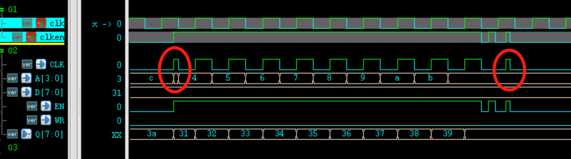
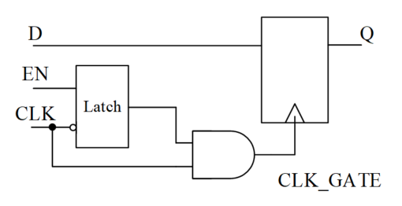
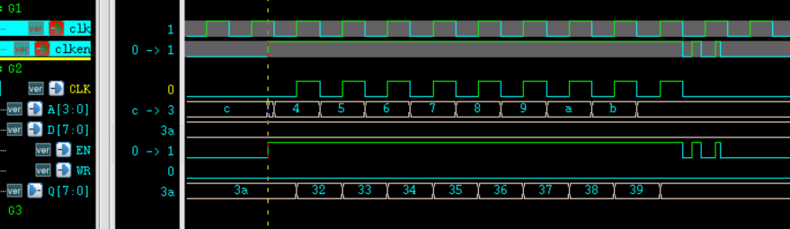

Clock Gating
Typically, a clock tree is composed of a large number of buffers and inverters. Since the clock signal is the signal with the highest toggle rate in the design, the power consumption of the clock tree can be as high as 30% of the total design power consumption. Adding a clock gating circuit can reduce the switching activity of the clock tree and save switching power. Meanwhile, the reduced switching activity of clock pins also reduces the internal power consumption of registers. Therefore, adopting clock gating can effectively reduce power consumption.
Implementation Principle
In simple terms, logic that shuts off the clock when a module or flip-flop is not working, without affecting normal functionality, can be called clock gating logic. In this case, the clock does not always exist, so it can be vividly described as a "gated clock".

There are mainly three methods to implement clock gating.
1. Using AND logic
The simplest method is to directly perform an AND operation between the clock enable (gating) signal and the clock.
For example, performing this operation on the clock of a RAM block, the code is as follows:
Example
module clkgate_basic
(
input clk ,
input clken ,
input rstn ,
input wr_en ,
input [3:0] addr ,
input [7:0] data ,
output [7:0] q
);
//clk gate
wire clk_gate = clk & clken ;
ram #(4, 8)
u1_ram16x8
(
.CLK (clk_gate),
.A (addr),
.D (data),
.EN (clken),
.WR (wr_en),
.Q (q));
endmodule
The RAM model is as follows:
Example
#( parameter AW = 2 ,
parameter DW = 3 )
(
input CLK ,
input [AW-1:0] A ,
input [DW-1:0] D ,
input EN ,
input WR , //1 for write and 0 for read
output reg [DW-1:0] Q
);
parameter MASK = 3 ;
reg [DW-1:0] mem [0:(1<<AW)-1] ;
always @(posedge CLK) begin
if (EN && WR) begin
mem[A] <= D ;
end
else if (EN && !WR) begin
Q <= mem[A] ;
end
end
endmodule
The testbench code is as follows:
Example
module test ;
//signals declaration
reg rstn ;
reg clk ;
reg clken ;
reg wr_en ;
reg [3:0] addr ;
reg [7:0] data ;
wire [7:0] q ;
initial begin
rstn = 0 ;
#7 rstn = 0 ;
end
always begin
#50 clk = 0 ;
#50 clk = 1 ;
end
//data logic
initial begin
clken = 0 ;
wr_en = 0 ;
addr = 4'h3 ;
data = 8'h31 ;
# 53 ;
//(1) normal write and read
clken = 1 ;
wr_en = 1 ;
repeat(9) begin
@(negedge clk) ;
data = data + 1 ;
addr = addr + 1 ;
end
@(negedge clk) ;
clken = 0 ;
wr_en = 0 ;
//read
#211;
addr = 4'h3 ;
clken = 1 ;
repeat(9) begin
@(negedge clk) ;
addr = addr + 1 ;
end
@(negedge clk) ;
//end
clken = 0 ;
end // initial begin
clkgate_basic u_ram_clkgate
(
.clk (clk),
.clken (clken),
.rstn (rstn),
.wr_en (wr_en),
.addr (addr),
.data (data),
.q (q)
);
//simulation finish
always begin
#100;
if ($time >= 10000) begin
#1 ;
$finish ;
end
end
endmodule
Capture the RAM port signals; the test results are as follows.
As shown in the figure, during the interval between read and write operations, the RAM clock has a period where it remains at 0. The clock does not toggle when the RAM is not working, which in practice also greatly reduces power consumption.

The drawbacks of this method are also obvious. Due to timing or jitter issues, after performing an AND operation between the clock enable signal and the clock, glitches are easily generated, which can severely impact digital circuits.
In the testbench, perform a non-ideal simulation of the clock enable signal by adding the following simulation code:
Example
#985;
addr = 4'h3 ;
clken = 1 ;
repeat(9) begin
@(negedge clk) ;
addr = addr + 1 ;
end
@(negedge clk) ;
clken = 0 ;
#20 clken = 1 ;
#21 clken = 0 ;
#31 clken = 1 ;
#13 clken = 0 ;
The simulation results of reading the RAM are as follows.

It can be seen from the figure that due to the asynchrony or jitter of the signal clken, glitches have appeared in the clock input to the RAM. The data at address 0x3 is missed (related to the enable signal timing), and the data at address 0xC is read twice. Clearly, the logic design of this clock gating is very dangerous.
To solve such problems, a latch structure is needed to eliminate glitches.
2. Using a latch
In the Verilog Tutorial chapter"6.5 Verilog Avoiding Latch"It is mentioned that the generation of latches should be avoided in digital design, but clock gating is an exception. Therefore, when performing timing analysis, there is no need to worry about the latches generated by the clock gating part.
The circuit diagram for using a latch to eliminate clock gating glitches is shown below.
The clock enable signal is latched on the falling edge of the clock and held unchanged for a clock cycle. The latched signal is then ANDed with the clock, which can eliminate glitches in the gated clock.

Rewrite the gated clock logic part of the simulation example that directly uses the AND operation to use latch logic, with the modifications as follows:
Example
reg en_latch ;
always @(*) begin
if (!clk) begin
en_latch = clken ;
end
end
wire clk_gate = clk & en_latch ;
The simulation results are as follows.
Although the data at address 0x3 is still missed (related to the enable signal timing), the RAM clock is now a normal clock and no glitches appear (the CLK signal highlighted in yellow).

3. Using a standard cell library
Although using a latch can solve the occurrence of glitches in clock gating, timing also requires strict constraints.
In FPGA or IC design, the synthesis library often contains integrated gating logic cells. Such gating logic cells have undergone extensive iteration and verification, making them more convenient and safer to use.
Therefore, in general, clock gating designs directly instantiate dedicated integrated gating logic cells. The instantiation method is similar to that of basic cells such as AND gates and buffers; simply instantiate them directly.
Usage
Properly using clock gating logic to control the circuit clock can also effectively reduce power consumption.
1. Manual gating
Add a clock enable signal to manually control whether the module's working clock is present.
When the module is working, the enable signal is asserted and the clock is turned on; when the module is idle, the enable signal is deasserted and the clock is turned off, saving power.
The simulation design in the previous section can be regarded as an example of manual gating. During RAM read/write, the enable signal is high, the RAM clock is turned on, and the RAM starts working; when the enable signal is low, the RAM does not work, and there is no input clock at this time.
2. Automatic gating
During operation, a module can automatically detect its own working status and output a busy signal. Externally, this indicator signal can be used to apply clock gating to part of the internal logic of the module, thereby reducing clock toggling and achieving automatic gating control.
Unlike manual gating, these modules have short idle states while working. Automatic gating is about shutting off unused clocks during these short idle states, rather than directly shutting off the entire module's clock like manual gating; otherwise, the module would no longer work normally.
For example, a UART has an idle state after completing one data transmission. At this time, the clocks of modules such as FIFO logic and baud rate generation logic can be automatically turned off.
For example, in a design containing a CPU, logic can be added to detect the idle state of the bus, and automatically control the switching of the bus clock to reduce power consumption.
Due to space limitations, no simulation examples are provided here.
3. Automatic gating insertion
When logic synthesis is performed after the RTL design is completed, the compiler will also automatically optimize the logic of the code, which includes gating the clock terminals of some flip-flops. For example, the RTL description of a synchronous D flip-flop with an enable terminal is as follows:
Example
always @(posedge CLK) begin
if (EN) begin
Q = D ;
end
end
Its RTL pre-synthesis simulation waveform is shown below:

The simulation waveform after synthesis often appears as shown below:
From the comparison, it can be seen that after synthesis the EN signal no longer exists, and the clock (CP terminal) is not continuously present after clock gating. This not only ensures logic correctness but also reduces clock toggling and lowers power consumption.
Click me to share notes
<p style="font-size:14px;">The note must be an extension of the content of this article!</p><br> <p style="font-size:12px;"><a href="../tougao.html" target="_blank">To submit an article, click here</a></p> <p style="font-size:14px;"><a href="./runoob-user-test-intro.html" target="_blank">How to obtain a registration invitation code</a></p> <h3 class="text-muted"><i class="fa fa-info-circle" aria-hidden="true"></i> Before sharing notes, you must <a href=".." class="runoob-pop">login</a>!</h3> <p><a href="./runoob-user-test-intro.html" target="_blank">How to obtain a registration invitation code</a></p>